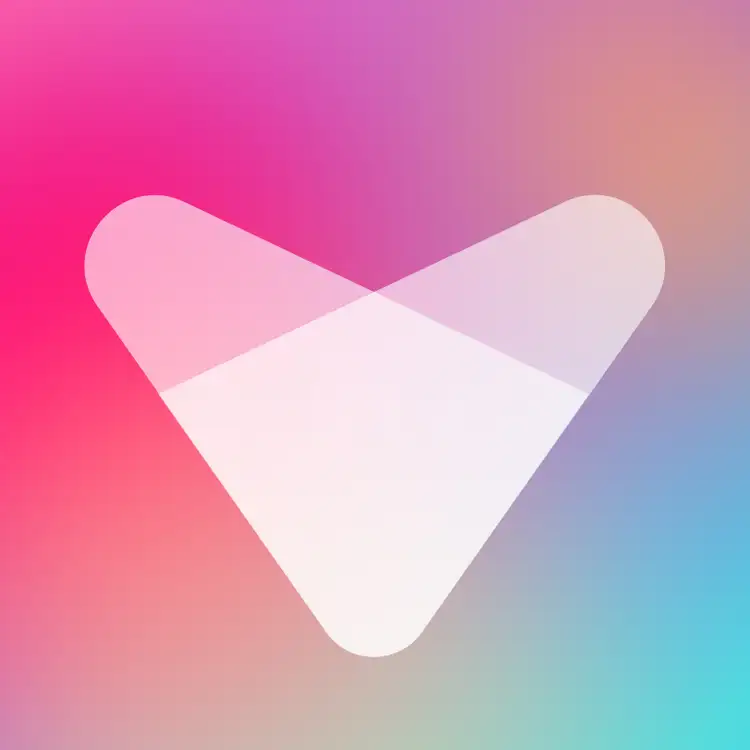

Generating...
AI is rendering your drop. It usually takes 2-3 minutes.
It will be auto-published to your drops. We'll notify you when it's ready.

AI is rendering your drop. It usually takes 2-3 minutes.
It will be auto-published to your drops. We'll notify you when it's ready.